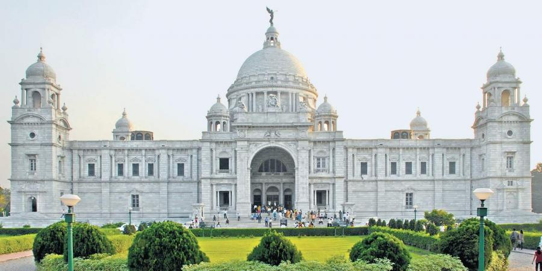

Blog:Well Kolkata,an eastern city in the state of West Bengal is the
place where I was born.Although I don't live in Kolkata anymore but
Kolkata is in my blood.The city has earned the nickname of 'City of
Joy' for its soulful embodiment of rich culture, love, mystery,
respect, enthusiasm and definitely some amazing sweet delicacies.You
guys might be knowing that Kolkata served as the Capital Of India
during British Empire & other history stuffs! but what you might not
be knowing about the people living here.
You will come across different types of people while visiting
various parts of India, but the residents of Kolkata has a complete
different approach towards their life.There morning starts with
'Gorom cha' or a hot tea with a newspaper in there hand, reading
various news section but there favourite will always be the sports
section.People living here has always valued sports whether it be
cricket or football but their favourite will always be
football,especially the famous battle between East Bengal &
MohunBagan.Apart from these ,the residents of Kolkata have a lazy
approach to life with a compulsory afternoon siesta, but the people
visiting this city is truly left mesmerised by the old world charm.
So come along. I’m going to show you my favorite highlights of this
unique city.
Howrah Bridge
Howrah Bridge is a balanced cantilever bridge over the Hooghly River
in West Bengal, India. Commissioned in 1943, the bridge was
originally named the New Howrah Bridge, because it replaced a
pontoon bridge at the same location linking the two cities of Howrah
and Kolkata (Calcutta). On 14 June 1965 it was renamed Rabindra Setu
after the great Bengali poet Rabindranath Tagore, who was the first
Indian and Asian Nobel laureate. It is still popularly known as the
Howrah Bridge.
The bridge is one of four on the Hooghly River and is a famous
symbol of Kolkata and West Bengal. The other bridges are the
Vidyasagar Setu (popularly called the Second Hooghly Bridge), the
Vivekananda Setu and the newly built Nivedita Setu. It weathers the
storms of the Bay of Bengal region, carrying a daily traffic of
approximately 100,000 vehicles and possibly more than 150,000
pedestrians, easily making it the busiest cantilever bridge in the
world. The third-longest cantilever bridge at the time of its
construction, the Howrah Bridge is currently the sixth-longest
bridge of its type in the world.
Victoria Memorial

Victoria Memorial is one of the famous and beautiful monuments of
Kolkata. It was built between 1906 and 1921 to commemorate Queen
Victoria's 25-year reign in India. After the Sepoy Mutiny of 1857,
the British government gathered the reins of control of the country
directly, and in 1876 the British parliament made Victoria the
Empress of India. Her reign ended with her death in 1901.
The Victoria Memorial is possibly the most awesome reminder of the
Raj to be found in India. This huge white-marble museum, made from
Makrana marbles from Rajasthan, is filled with a vast collection of
remnants from the period of British Empire rule in India. The forms
in the museum like the great dome, clustered with four subsidiary,
octagonal domed chattris, the high portals, the terrace and the
domed corner towers speak of a splendid richness in architecture.
The Memorial is situated on 64 acres of land with the building
covering 338 ft by 228 ft.
The Victoria Memorial is a landmark in the history of Indian
architecture and the credit for that justly goes to Lord Curzon who
chose persons like Sir William Emerson, President of the British
Institute of Architects, to design and plan the building and entrust
the construction work to the very famous Messrs. Martin & Co. of
Calcutta.
Dakhineshwar Kali Temple
Dakshineswar Temple – The temple of the goddess who is believed “to
liberate her devotees from the ocean of existence” – Bhavatarini, a
manifestation of goddess Kali, was constructed by a philanthropist
called Rani Rashmoni in 1855. The beautiful temple complex built in
the classic ‘Nava-ratna’ style of Bengali architecture is a popular
pilgrimage spot for Hindu devotees. The temple that stands on the
calm eastern bank of the Hooghly River was once a residing place of
the Hindu mystic – Ramakrishna Paramahansa. It is among one of the
most famous temples in Kolkata.
Dakshineswar is a locality in the north suburban region of Kolkata
under the jurisdiction of Kolkata Metropolitan Development
Authority. This place is historically famous for the great temple of
Goddess Kali, locally known as Maa Bhabatarini Mandir.
Dakshineswar is the most important international pilgrimage centre
in the district. Dakshineswar Kali Temple was built in 1855 by Rani
Rashmoni. The temple is famous for its association with Shri
Ramkrishna Paramhangsha Dev, a mystic of 19th Century Bengal. Large
number of people gather at Dakshineswar throughout the year
especially on the day of Shyama Puja, Shiva Chaturdashi, Bengali New
Year's Day (naba barsha), Akshaya Tritiya and on 1 January every
year on the occasion of Kalpataru Utsava (the day Shree Ramkrishna
attained siddhi)
As per the District Statistical Handbook, "Panchabati Ban is the
place where Shri Ramakrishna Paramhansha Dev planted five trees i.e.
Asvattha, Bata, Bel, Asok and Amlaki, under which he used to
meditate."
Eden Gardens
Eden Gardens is a cricket ground in Kolkata, India. Established in
1864, it is the oldest and second-largest cricket stadium in India
after the newly built Narendra Modi Stadium and third in the world
after Narendra Modi Stadium and Melbourne Cricket Ground. The
stadium currently has a capacity of 80,000. On 22 November 2019, the
venue hosted the first ever day/night Test match in India during the
second Test between India and Bangladesh.
Eden Gardens is often referred to as home of Indian cricket. It has
the fastest outfield of all the cricket stadiums in India, and is
regarded as a "batsman's paradise". The ground has been referred to
as "cricket's answer to the Colosseum". Eden Gardens is called the
“Mecca of Indian cricket”, due to it being the first officially
built ground for the game of cricket in India. Eden Gardens has
hosted matches in major international competitions including the
World Cup, World Twenty20 and Asia Cup. In 1987, Eden Gardens became
the second stadium to host a World Cup final. The 2016 ICC World
Twenty20 final was held at the stadium, with the West Indies beat
England in a closely fought encounter.
The stadium was established in 1864. It takes its name from the Eden
Gardens, one of the oldest parks in Kolkata, adjacent to the
stadium, designed in 1841 and named after the Eden sisters of Lord
Auckland, the then Governor-General of India. Initially it was named
'Auckland Circus Gardens' but later changed to 'Eden Gardens' by its
makers inspired by Garden of Eden in the Bible. According to popular
culture, Babu Rajchandra Das, the then zamindar (landlord) of
Kolkata, had gifted one of his biggest gardens besides river
Hooghly, to Viceroy Lord Auckland Eden and his sister Emily Eden
after they helped him by saving his 3rd daughter from a fatal
disease. From then onwards the garden's name was changed from Mar
Bagan to Eden Gardens. The cricket grounds were built between
Babughat and Fort William. The stadium is in the B. B. D. Bagh area
of the city, near the State Secretariat and opposite to the Calcutta
High Court.
Kumortuli
Kumortuli or the potter’s colony of Kolkata was by far one of the
most fascinating highlights of the city for me. The colony is
reknown for their production of clay idols of Hindu gods and
goddesses. I visited before the big Kali festival, so many sculptors
were busy at work sculpting Kali goddess statues. There are hundreds
of potter shops and their work supplies Kolkata and is exported
throughout India. It was helpful to be accompanied by a guide I had
for a half day tour with Viator. While much of Kumortoli seems
self-explanatory, wandering the shops alone might have felt a little
awkward for me. Having a guide helped me to get closer with my
camera.
The British colonisation of Bengal and India started following the
victory of the British East India Company in the Battle of Plassey
in 1757. The Company decided to build new settlement Fort William at
the site of the Gobindapur village. Most of the existing population
shifted to Sutanuti. While such neighbourhoods as Jorasanko and
Pathuriaghata became the centres of the local rich, there were other
areas that were developed simultaneously.The villages of
Gobindapur, Sutanuti and Kalikata developed to give rise to the
latter day metropolis of Calcutta.
Well I have mentioned a very few places,but I hope you could have
sensed the uniqueness of the city. For further information you can
refer
THIS LINK